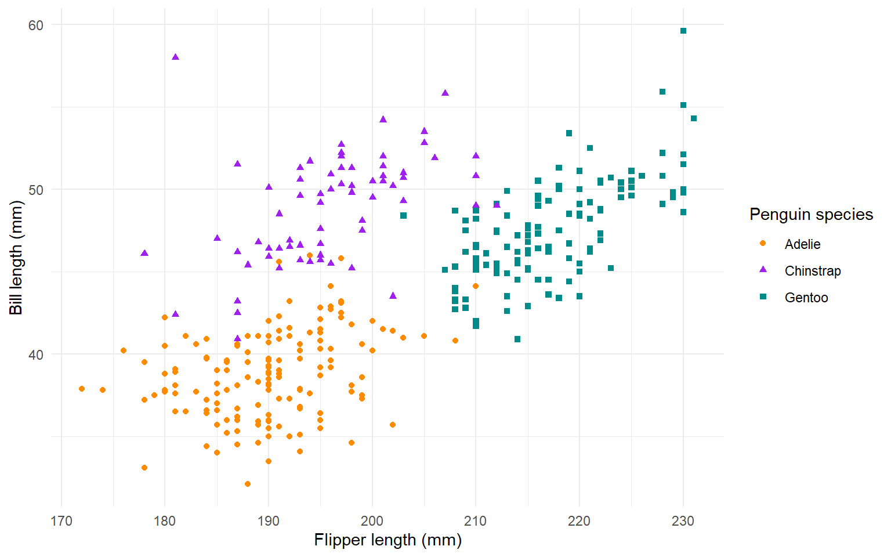

First level header
We will focus on rendering a Word document. The format is controlled with a combination of markdown syntax and a Microsoft Word reference document.
For more info on how to generate a reference template, see Happy collaboration with Rmd to docx or the CMAR SOP0008.
A single # indicates a first-level header.
Second level header
## indicates a second-level header.
We are going to use the palmerpenguins data set to explore making reports with Quarto.
This data set contains size measurements for 344 penguins from three species observed on three islands in the Palmer Archipelago, Antarctica.
Analysis
Here is where we do some analysis on the data. If anything in the dataset changes, we just need to re-render the document for updated tables and figures!
Summary Tables
The table format is set in the YAML with the entry df-print: kable and from the Microsoft Word reference document.
Table 1
Table 2
Figures
The figure format (size, resolution, caption) are set in the code chunk.
